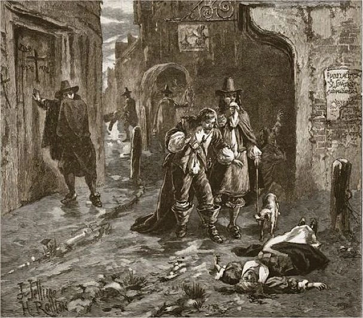
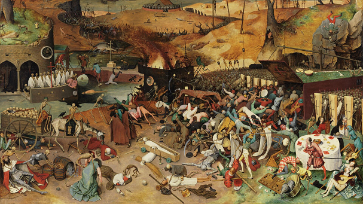

- Главная
- История
- Описание болезни
- Переносчики
- Целители
- защита
- Методы лечения
- Чумной форт
- Шарль де Лорм
- Врачи
- МЕНЮ
Костюм и другая защита:
- «Чумная» маска: Имела форму птичьего клюва и была заполнена ароматическими травами (роза, ладан, мята, розмарин) и специями. Это было сделано для того, чтобы защитить врача от запаха гниения, а также из-за поверья, что чума переносится птицами, и для того, чтобы врач не наклонялся близко к больному.
- Накидка: Длинный плащ до лодыжек из вощеной кожи, пропитанной воском или маслами.
- Прочая одежда: Полностью закрытая одежда, включая узкие брюки, перчатки и ботинки, также была пропитана защитными смесями.
- Трость: Использовалась для осмотра больных и ощупывания их без прямого контакта, а также для отталкивания людей, которые могли напасть на доктора, умоляя о помощи.
- Защитные смеси: Костюм и некоторые части тела врачей пропитывали смесью масел, камфоры и воска, а также «маслом четырёх воров» (смесь эфирных масел).

Принцип работы защиты
- Вощеная ткань и перчатки создавали барьер, защищающий от укусов блох и вшей, которые переносили чуму.
- Ароматические травы и масла в маске и на одежде, скорее всего, отпугивали насекомых, а их сильный запах служил еще и в качестве антисептика.
- «Чумная» маска с длинным клювом не давала врачу наклоняться слишком близко к больному, снижая риск заражения.
